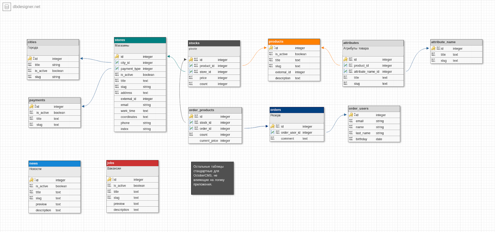
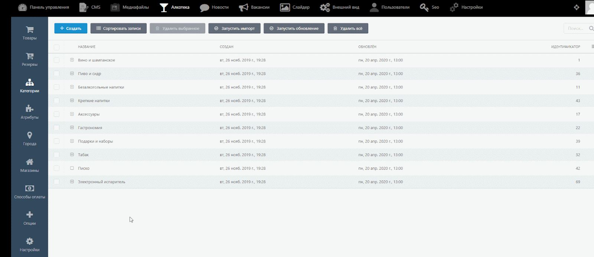

О проекте
Торговля товарами через интернет каждый год всё прочнее и прочнее внедряется в нашу жизнь. Срок доставки и средний чек уменьшаются, доля онлайн-продаж растёт как в России-матушке, так и в остальном мире.
Благодаря стремительному развитию электронная коммерция очень перспективна, но порой нестабильна — правила игры меняются слишком быстро. Это делает же ecommerce-проекты крайне интересными для всех причастных.
Все интернет-магазины одинаковые
Помимо динамичного рынка и высокой конкуренции, есть и вполне конкретные сложности при разработке инструментов торговли в интернете и их продвижения. Казалось бы, все интернет-магазины похожи друг на друга: вот каталог, вот фильтры, вот карточка товара с кнопкой «купить», переходим в корзину, оформляем заказ и всё, готово.
Всё, в принципе, верно, но есть некоторые нюансы:
особенности бизнеса: кто-то доставляет самостоятельно, кто-то просит интегрировать сайт с транспортной компанией, с оплатой всё ещё сложнее.
юридические особенности: при сборе персональных данных нужно согласие пользователя, онлайн-оплата требует указания на сайте реквизитов, условий оплаты, возвратов, чека и т.д.
нишевые особенности: керамическая плитка продается в квадратных метрах и упаковках, у одежды и обуви есть размер, у маркетплейсов несколько продавцов с разной ценой. Табаком и алкоголем дистанционно торговать вообще нельзя.
Все интернет-магазины всё-таки разные, хоть и похожи друг на друга, особенно в одной нише.
Клиент
«Алкотека» — сеть специализированных магазинов алкогольной продукции, один из лидеров рынка таких товаров на юге России. 288 магазинов, более 11 000 наименований напитков и пищевых продуктов, отличный сервис.
Лично рекомендуем «Алкотеку» всем старше 18 с чувством меры, но без противопоказаний, резервируйте вот тут.
Лёд тоже имеется ;-)
Зачем нужен интернет-магазин, если дистанционный оборот алкоголя запрещён? Сайт, на котором нельзя торговать, всё равно полезен бизнесу:
бренду нужно в интернете присутствовать и иметь свою позицию и доносить покупателю полезную информацию;
много покупателей начинают свой путь с поиска напитка в Яндексе и гугле, важно показать им искомое на сайте компании;
сайт может мотивировать покупателя вернуться и купить с помощью маркетинга;
можно дать возможность резервировать товар, чтобы купить его при визите в магазин;
рынок потихоньку двигает государство в сторону отмены запрета на дистанционную торговлю, и замены ограничений на более мягкие.
Проблемы
Сотрудничать с «Алкотекой» мы начали в качестве подрядчика по технической поддержке интернет-магазина компании на CMS «1С-БИТРИКС Управление сайтом».
Через несколько месяцев вполне продуктивной работы нам прислали на оценку несколько объёмных задач: дополнить интеграцию с 1С остатками и ценами по магазинам, скорость и стабильность обмена данными и самого сайта. Следующей волной планировали интегрировать систему лояльности и переходить к разработке мобильного приложения.
К сожалению, мы были вынуждены отказать. Сделать было можно, но вот что мешало:
с точки зрения дизайна и логики текущий сайт был очень хорош, а вот с точки зрения скорости работы ядра и возможности доработок — так себе. В самом ядре и архитектуре CMS от «1С-Битрикс» есть некоторые ограничения и особенности работы, сильно увеличивающие время и бюджет на развитие сайта.
обмен был реализован стандартный от Битрикса, в формате xml, работал он медленно и нестабильно, масштабировать было бы рискованным поступком.
Мы предложили переработать сайт и сменить технологии на более современные, мощные и подходящие, и получили согласие.
Цель
Переработать код сайта без изменения внешнего вида для смены технологий на более масштабируемые, создать новый механизм для интеграции с 1С.
Задачи
повысить скорость работы сайта
обеспечить возможность развития проекта собственной функционалом в адекватные сроки и бюджеты
разработать механизм расширяемой интеграции с 1С 8.0 с выгрузкой данных о товаре магазинах, ценах и остатках в них, повысить скорость и стабильность обмена данными
подготовить базу для мобильного приложения
Дизайн
Ничего не рисовали, дизайн у «Алкотеки» крутой.
Техническое задание
Написали и согласовали первым делом, чтобы всем участникам было понятно и абсолютно прозрачно, что как будет работать, и почему.
Также было важно было хорошо сразу спроектировать базы данных, чтобы обеспечить возможность изменения и масштабирования всей её структуры, и запустить работы по разработке API параллельно с версткой.
Frontend
Переверстали полностью, чтобы сделать код страниц чище, понятнее и ускорить загрузку страниц. Стек стандартный: html+css и JavaScript для браузерных вычислений, фильтрации каталога без перезагрузки, корзины и страницы оформления резерва.

Обмен
В основе IT-инфраструктуры «Алкотеки» мощная 1С:УТ 8.0 и профессиональные специалисты по этой учётной программе. По этой причине API для обмена решили расположить со стороны 1С: данные могут понадобиться не только сайту.
Логика обработки данных и её расписание содержатся и управляются в серверной части интернет-магазина.
1С обменивается с сайтом товарами и атрибутами, данными о магазинах, остатками и ценами по каждому магазину, номерами дисконтных карт в формате JSON. Возможны выгрузки любого объема, инициировать их может любая сторона обмена.
Полная выгрузка (3 200 000 записей в БД сайта) проходит за несколько часов, регулярной необходимости в ней теперь нет. Небольшие обновления обрабатываются за несколько секунд. Нагрузка балансируется, чтобы пользователи не испытывали проблем при работе с сайтом во время обработки данных.
Картинки тоже приходят из 1С в формате base64, становятся графическим файлом уже на сервере с сайтом.
Резерв отправляется только в одну сторону, из интернет-магазина в 1С, далее его либо пробьют в магазине при продаже, либо он автоматически отменится после закрытия магазина.
Backend
Использовали Laravel для всей серверной логики и работы с базой данных. Очень любим этот фреймворк, он позволяет развивать проект в любую сторону, ускоряет разработку, быстро работает. Не только мы любим Laravel, это самый популярный фреймворк PHP по данным Github (платформа для разработчиков №1 в мире).
В качестве административной части использовали OctoberCMS — систему управления сайтом, построенную на компонентах Laravel. Она переведена на русский, позволяет гибко проектировать и масштабировать административную часть, без наследования проблем скорости ядра или избыточного функционала.
Особенно приятно, что она очень легко расширяется собственными встраиваемыми страницами и элементами. Например, можно вывести небольшой дашборд для каждого административного раздела.
Из админки можно управлять практически всем содержимым сайта, включая новости, акции, вакансии. Товар, магазины, цены и остатки может создавать как 1С при обмене, так и администратор магазина.

Что ещё сделали
Интегрировались с sms.ru для отправки сообщений о резервах.
Сделали сохранение корзин в базу данных для удобства пользователей и сбора обезличенных данных отделу маркетинга.
Внедрили человекопонятный адрес при применении фильтра в каталоге, разработали SEO-модуль для комфортной работы с параметрами страниц и переменными, нужных для поискового продвижения, сделали карту сайта для поисковиков с автоматическим обновлением.
Написали документацию к коду сайта для штатных специалистов «Алкотеки» и внутреннего использования, мануал по работе с админкой для администратора и контент-менеджера.
Внедрили подробное логирование всех операций, чтобы точно проверить и отладить до релиза максимум. Провели несколько циклов тестирования, в том числе и нагрузочное.
Выкатили новый сайт в релиз через 3 месяца.
Результат
Скорость работы сайта выросла, обмен работает гораздо стабильнее и шустрее. Ведём разработку нескольких крупных задач, готовимся к разработке мобильного приложения и внедрению системы лояльности.
В общем, развиваем сайт, ждём отмены дистанционной торговли алкоголем, пьём прохладные коктейли вместе с «Алкотекой».
Ждём вас на сайте, если вам больше 18 и вы не проходили «12 шагов».